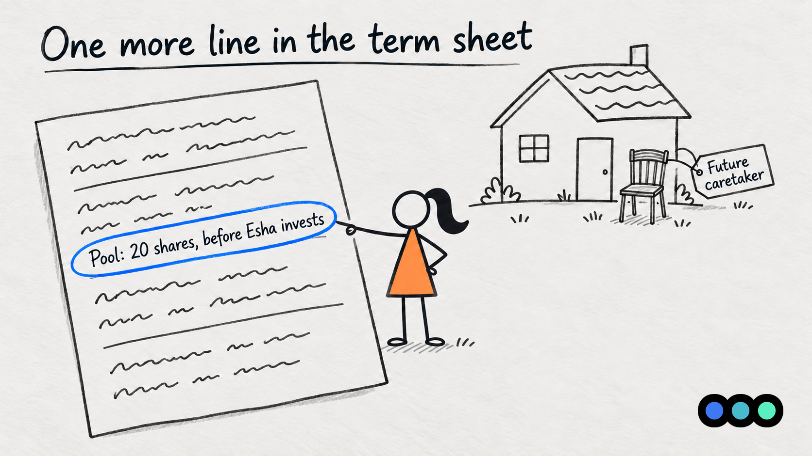
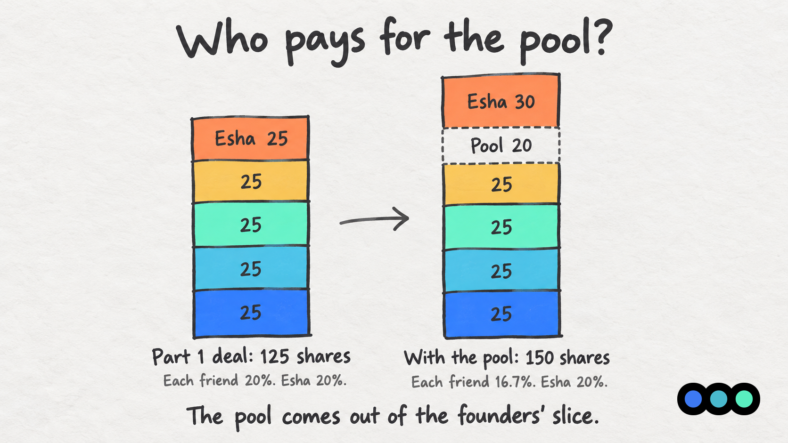
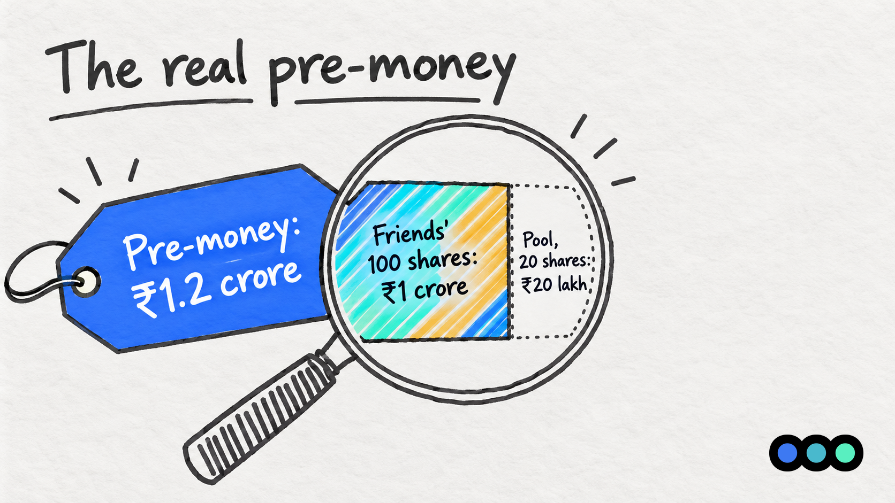
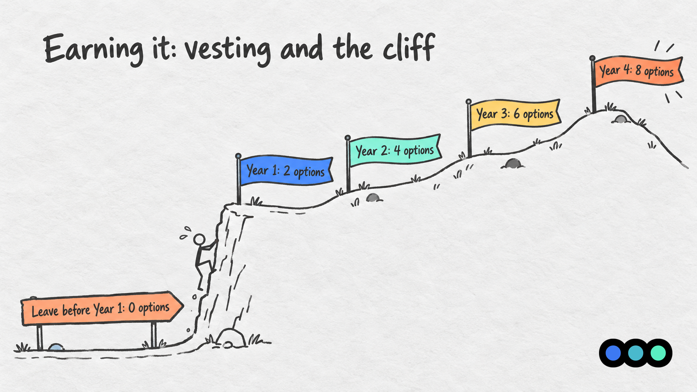

Startup Concepts · Finance for the Fundraising-Curious, Part 3
ESOP Essentials
A Slice for Farhan
TL;DR
An ESOP pool is a block of shares set aside to pay future team members in ownership instead of cash. They earn their slice over time, through vesting (getting it bit by bit, as they stay). The catch is where the pool sits: if it is carved out of the pre-money valuation, the founders pay for all of it and the investor pays nothing.
One More Line in the Term Sheet
Rewind to Part 1. Esha is about to put ₹30 lakh into the house at a pre-money valuation of ₹1.2 crore. In the real deal she got 25 new shares at ₹1,20,000 each, and everyone ended up with 20%.
Now replay it with one extra line in her term sheet.
"The house will need a full-time caretaker," Esha says. "None of you has time, and you cannot afford a big salary. So before I invest, set aside 20 shares for whoever you hire. You can pay them partly in ownership."
That block of shares is an option pool, or ESOP pool. ESOP stands for employee stock option plan: a company's plan for giving its team a stake. It sounds generous, and it is a good idea. The question is who pays for it.

Who Pays for the Pool?
The headline still says ₹1.2 crore pre-money. But that ₹1.2 crore now has to cover 120 shares, not 100: the friends' 100 plus the 20 in the pool. So each share is priced at ₹1.2 crore ÷ 120 = ₹1,00,000, not ₹1,20,000.
At the lower price, Esha's ₹30 lakh buys 30 shares instead of 25. She still owns exactly 20%: 30 shares out of 150.
| Holder | Part 1 deal | With the pool | Value |
|---|---|---|---|
| Each friend | 25 shares, 20% | 25 shares, 16.7% | ₹30 lakh to ₹25 lakh |
| All four friends | 100 shares, 80% | 100 shares, 66.7% | ₹1.2 crore to ₹1 crore |
| Pool | None | 20 shares, 13.3% | ₹20 lakh |
| Esha | 25 shares, 20% | 30 shares, 20% | ₹30 lakh, unchanged |
| Total | 125 shares | 150 shares | ₹1.5 crore, unchanged |
Percentages with the pool are rounded to one decimal place.
Read across the rows. Esha's line has not moved: 20% before, 20% after, worth ₹30 lakh either way. The whole ₹20 lakh pool came out of the friends' side. Each friend gave up ₹5 lakh of value to pay for a caretaker who has not been hired yet.

The Real Pre-Money
Here is the trick. The term sheet says ₹1.2 crore. But the friends' 100 shares are now valued at 100 × ₹1,00,000 = ₹1 crore, exactly what they paid for the house in the first place. The other ₹20 lakh of the "pre-money" is the pool.
Founders call this the effective pre-money: the headline valuation minus the pool. It is the number that tells you what your own shares were really priced at.
If the same pool were created after Esha's money came in, everyone would be diluted, Esha included. That is exactly why investors usually ask for the pool to sit in the pre-money. It is a normal request, not a trick by a bad investor. But it means the size of the pool is worth negotiating as carefully as the valuation itself.

Farhan Joins: Options, Not Shares
A few months later the friends hire Farhan, who is good with old houses and wants to stay for the long run. They offer him a modest salary plus 8 of the 20 pooled shares.
Farhan does not get 8 shares on his first day. He gets 8 options: the right to buy a share later, at a price fixed today. That fixed price is the exercise price.
Say Farhan's exercise price is ₹10, the face value from Part 1. If a share is later worth ₹1,00,000, each option lets him buy, for ₹10, something worth ₹1,00,000. If the house never grows, his options are worth very little. He wins only if the house does.
How ESOPs are taxed in India is covered below.
Earning It: Vesting and the Cliff
The friends do not want Farhan to collect 8 options and leave after a month. So the options vest (become his bit by bit): he earns them over time by staying.
A common shape is four years with a one-year cliff (a waiting period: nothing is his until it ends). Nothing vests during the first year. On his first anniversary, a quarter of the grant, 2 options, vests all at once. Leave before that, and he walks away with none. After the cliff, the rest vest steadily until all 8 are his at the four-year mark. Many companies vest monthly after the cliff; here they vest once a year to keep the maths simple.
| If Farhan leaves after | Options he keeps | Options back to the pool |
|---|---|---|
| 10 months | 0 | 8 |
| 1 year | 2 | 6 |
| 2 years and 6 months | 4 | 4 |
| 4 years | 8 | 0 |
Options he has not earned go back into the pool, ready for the next hire. The pool still has 12 unused shares as well, so the friends can hire again without asking anyone to give up more.

What This Looks Like in Your Startup
The house is your company. The four friends are the founders. Farhan is your first engineer, your first sales lead, or anyone you cannot afford to pay a market salary yet. And the line in Esha's term sheet is one you are likely to see at your seed round.
The useful question is not "how big is a normal pool?" but "who will we hire before the next round, and how much ownership will it take to get them?" A pool built from a hiring plan is easier to defend in a negotiation than a round number. An oversized pool dilutes you today for hires you may never make.
Founders often treat ESOPs as an HR afterthought, but investors read them as a signal. Set up your ESOP pool before you raise, not after. A clean, well-sized pool shows you're building a team that lasts, and it saves you from avoidable dilution at your next round.
 Monica GuptaCo-Founder and CEO, Earlyseed Ventures
Monica GuptaCo-Founder and CEO, Earlyseed Ventures
In India
- An ESOP scheme in a private company is set up under the Companies Act, 2013 and its share capital rules, and needs shareholder approval.
- There must be at least one year between granting an option and its first vesting, which is one reason a one-year cliff is so common.
- Promoters, usually the founders, generally cannot receive ESOPs, though startups recognised by DPIIT get some relief from this for their first years.
- ESOPs are usually taxed twice: once when the option is exercised, on the gap between the share's value and the exercise price, and again as capital gains when the share is sold. Employees of eligible startups can defer the first tax.
Napkin Math Box
The pool and Farhan's options, worked through on the house.
| What you want to find | Formula | House example |
|---|---|---|
| Share price with a pre-money pool | Pre-money ÷ (Existing shares + Pool) | ₹1.2 Cr ÷ (100 + 20) = ₹1,00,000 |
| Investor's new shares | Amount invested ÷ Share price | ₹30 L ÷ ₹1,00,000 = 30 |
| Pool as a share of the company | Pool ÷ Total shares after the round | 20 ÷ 150 = 13.3% |
| Effective pre-money | Headline pre-money − Pool × Share price | ₹1.2 Cr − 20 × ₹1,00,000 = ₹1 Cr |
| Options vested | Total options × Full years served ÷ Vesting years (zero before the cliff) | 8 × 2 ÷ 4 = 4 |
| Gain on vested options | Options × (Share value − Exercise price) | 4 × (₹1,00,000 − ₹10) = ₹3,99,960 |
Key Terms
Everything this post defined, in one place.
- ESOP
- Employee stock option plan. A company's plan for giving its team a stake, usually as options.
- Option pool
- A block of shares set aside for future grants to the team. In the house, 20 shares.
- Option
- The right to buy a share later at a price fixed today. Not a share until it is exercised.
- Exercise price
- The fixed price at which an option can be turned into a share. Farhan's is ₹10.
- Vesting
- Earning options over time by staying. Farhan's 8 options vest over four years.
- Cliff
- The waiting period before anything vests. Leave before it ends and you keep nothing. Farhan's is one year.
- Effective pre-money
- The headline pre-money valuation minus the pool. What the founders' own shares were really priced at. In the house, ₹1.2 crore minus ₹20 lakh is ₹1 crore.
This post is general information, not financial, legal or tax advice. It is written to help founders recognise the terms they will meet when they raise. How the rules apply depends on how your round is structured and who is investing, so check your own deal with your CA or company secretary before you sign.
Common Founder Mistakes
- Reading only the headline valuation. Ask where the pool sits. ₹1.2 crore with a 20-share pool in the pre-money is ₹1 crore for the friends' shares.
- Agreeing to a pool bigger than your hiring plan. Every unused share in the pool was paid for by the founders.
- Promising options in conversation. "You'll get 1%" said over coffee is not a grant. Options need a scheme, approvals and a written grant letter, or the promise can turn into a dispute.
- Skipping the cliff. Without one, a hire who leaves in month three can walk away with part of the company.
- Not explaining the tax to your team. Exercising can trigger tax before anyone has sold a share or seen any cash.
Next in the Series
Part 4: Someone Else Wants In. The renovated house is worth more, and a new investor wants a slice. We look at the next round: a higher valuation, how dilution stacks up round after round, and Esha's right to keep her 20%. Now live.
Not sure which round you are raising?
That is the conversation we have with founders most often, and it is rarely about the number. It is about what you have proven, and whether your deck, your model and your story all say the same thing.
Prologue works with founders before they raise. If you are planning a round and want a second opinion on where you actually stand, talk to us.

About Sakshay Upadhyay
Sakshay Upadhyay is an Investment Associate at Earlyseed Ventures and a Warwick Business School alumnus. With over four years in venture capital finance, Sakshay has worked with more than 30 founders on fundraising strategy and financial modelling.